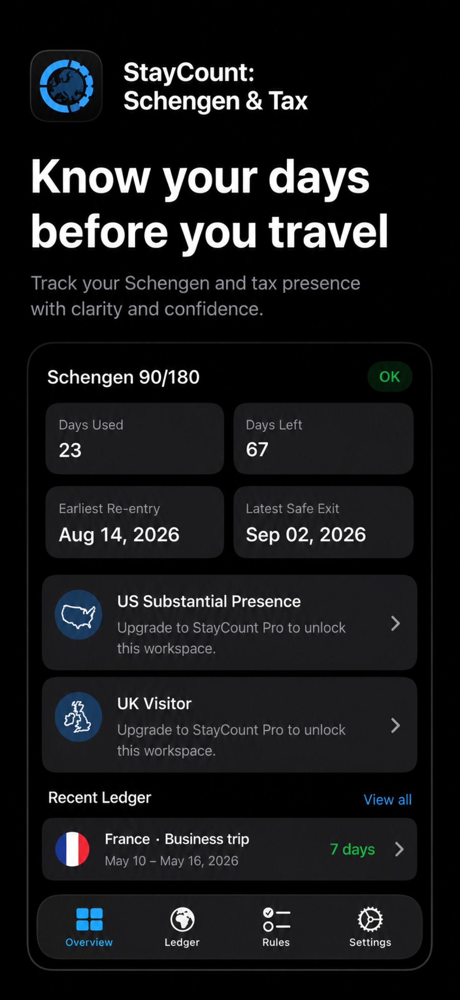
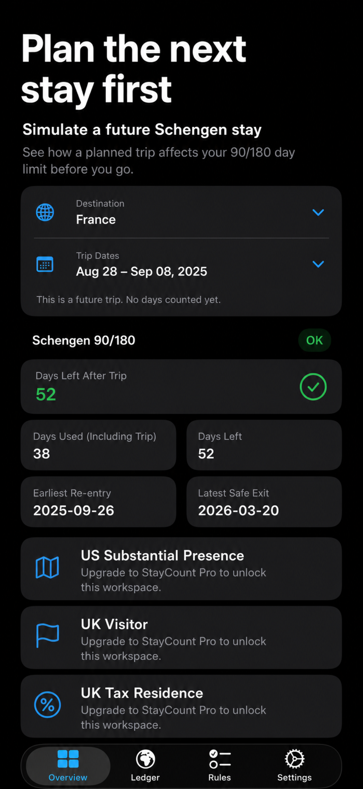
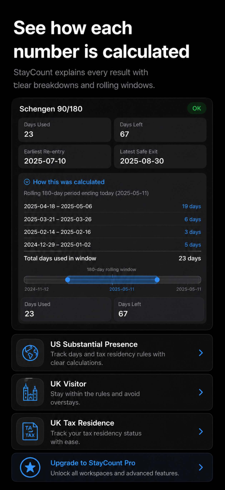

How does the Schengen 90/180-day rule work?
Understand the rolling window and contributing days.
Read the guide
Private travel-day planning
A private, explainable travel-day ledger for Schengen, US, and UK presence rules.
No account. No location permission. Records stay on your device unless you choose to export a backup.

Understand the rolling window and contributing days.
Read the guideEstimate when allowance may return from your entered stays.
Read the guideSimulate a proposed stay before making firm plans.
Read the guideKeep one ledger while separating jurisdiction rules.
Read the guideReview current and weighted prior-year US days.
Read the guideRecord tax-year facts, ties, workdays, and exceptions.
Read the guideUse a local ledger without account or location tracking.
Read the guide

Free workspace for rolling days used, days left, contributing dates, earliest re-entry, and a future-stay simulation.
StayCount Pro separates current-year days, weighted prior years, the 31-day minimum, and excluded spans.
StayCount Pro keeps visitor inputs and explanations separate from tax residence.
StayCount Pro records tax-year facts, ties, workdays, transit, and exceptional circumstances.
Core calculations work offline. Travel stays are entered manually and stored on device. Optional App Lock protects access; Pro supports selected evidence attachments and user-initiated password-encrypted backup.
Results depend on the dates and facts you enter. StayCount does not provide immigration, legal, tax, or financial advice, guarantee an outcome, or represent a government authority.